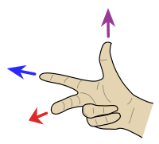

笛卡尔坐标系、点
笛卡尔坐标系
- 红(X)、绿(Y)、蓝(Z)
- 互相垂直
- 交于原点
右手定则
创建Point3d
[2.m, 1.m, 0]
Geom::Point3d.new(2.m, 1.m, 0)
原点常量
ORIGIN
判断位置相同
Geom::Point3d.new(2.m, 1.m, 0) == [2.m, 1.m, 0]
Ruby语言运算符是方法
'string1'.eql?('string2')
'string1'.==('string2')
'string1' == 'string2'
点与点的距离
公式
distance
ORIGIN.distance(Geom::Point3d.new(2.m, 1.m, 0))
API
| 关键字 | 描述 | 文档链接 |
|---|---|---|
| Point3d | 点类型 | doc |
| ORIGIN | 原点常量 | doc |
| point3d.x | 获取x分量 | doc |
| point3d.y | 获取y分量 | doc |
| point3d.z | 获取z分量 | doc |
| array.x | 获取数组第一个元素 | doc |
| array.y | 获取数组第二个元素 | doc |
| array.z | 获取数组第三个元素 | doc |
| point3d.== | 判断位置是否相同 | doc |
| distance | 两点之间距离 | doc |